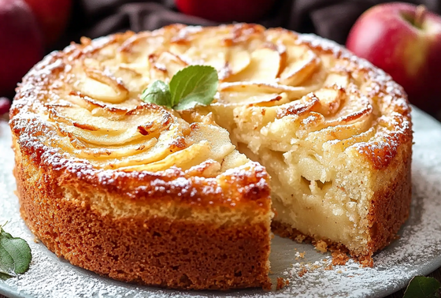
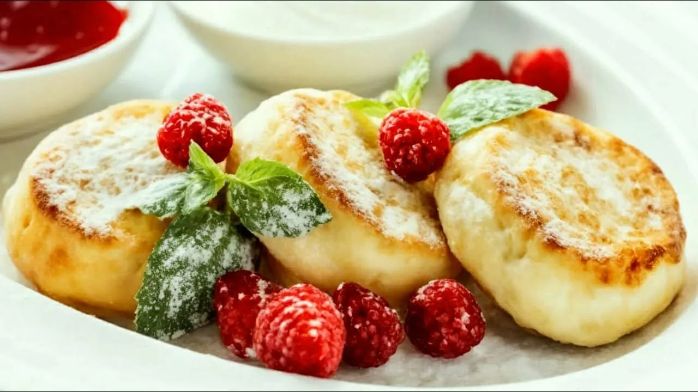

ШАРЛОТКА
Шарлотка — сладкий десерт из яблок, запечённых в тесте — вариант яблочного пирога. Классическая шарлотка — это сладкое блюдо, приготовленное из белого хлеба, заварного крема, яиц, фруктов и ликёра.
Русская шарлотка была придумана в начале XIX века французским поваром Мари Антуаном Каремом, состоявшим на службе у Александра I. Первоначально блюдо называлось charlotte à la parisienne (парижская шарлотка), позже десерт прославился по всему миру под именем charlotte russe (русская шарлотка). Для изготовления русской шарлотки форму выкладывают печеньем савоярди или готовым бисквитом и заполняют баварским кремом и взбитыми сливками. Затем десерт следует остудить до затвердения. В советское время, в рамках борьбы с «низкопоклонством перед Западом», была переименована в «яблочную бабку». В «Книге о вкусной и здоровой пище» 1952 года данный рецепт именуется «шарлоткой». А в издании 1955 года — «бабкой из белого хлеба с яблоками». В настоящее время на территории СНГ шарлоткой называется лёгкий в приготовлении яблочный пирог, который представляет собой бисквит с начинкой из нарезанных яблок.
Рецепт
Для приготовления данного продукта понадобятся эти продукты:
- Яблоки - 3 небольших (300 г.)
- Яйца C0 (крупные) - 4 шт.
- Сахар - 200 г. (можно 100-120 г.)
- Мука - 120 г. (4-5 ст. ложек)
- Сок лимона - 2 ст. ложки
- Сахарная пудра (по желанию) - 0,5 ст. ложки
- Шаг 1
- Подготовьте необходимые ингредиенты. Яблоки желательно выбирать твёрдых сортов, кисло-сладкие. Я использовала красные яблоки и не очищала их, чтобы пирог выглядел красивее. Яблоки нарежьте ломтиками. Полейте нарезанные яблоки лимонным соком и перемешайте.
- Шаг 2
- В большую миску разбейте яйца. Включите духовку для разогрева до 180 градусов.К яйцам всыпьте сахар. (Рекомендуют не сразу всыпать весь сахар, а добавлять частями при взбивании.) В рецептах бисквитного теста количество сахара в столовых ложках часто соответствует количеству яиц. То есть для бисквита из 4-х яиц достаточно 4-5 ложек (и столько же ложек муки). Но я добавила 1 стакан сахара (200 г) - бисквит получился сладким, но очень воздушным и пышным. Вы можете использовать меньше сахара (100-150 г), но учитывайте, что сахар влияет не только на сладость теста, но и на его структуру и плотность.
- Шаг 3
- Миксером, на высокой скорости, взбивайте яйца с сахаром в течение 8-10 минут минимум. Масса должна стать светлой, пышной и увеличиться в несколько раз. (Замечают, что на качество и скорость взбивания яиц может влиять форма венчиков миксера, и лучше всего - парные основные насадки). В яичную смесь просейте частями муку через сито.
- Шаг 4
- Лопаткой аккуратно вмешивайте муку снизу вверх, поднимающими движениями, чтобы тесто осталось воздушным, не осело. Дно разъёмной формы для выпечки (диаметром 23-24 см) покройте пергаментом. Стенки формы смазывать маслом не нужно. Если беспокоитесь, что пирог будет трудно вынуть из формы, смажьте ее маслом, но присыпьте при этом мукой, панировочными сухарями или манкой. На дно формы выложите ломтики яблок. Сверху яблоки залейте тестом. (Можно выложить яблоки в два слоя, чередуя их с тестом.) Выпекайте шарлотку в духовке, предварительно разогретой до 180 градусов, примерно 40 минут. Важно духовку при выпечке бисквитного теста не открывать, по крайней мере первые 20 минут.
- Шаг 5
- Готовую шарлотку остудите в форме. Затем выложите бисквитный пирог с яблоками на блюдо, перевернув вверх дном, чтобы яблочные ломтики оказались сверху. Когда яблочный пирог полностью остынет, можно посыпать его сахарной пудрой. Приятного аппетита!
——————

ТУЛЬСКИЙ ПРЯНИК
Тульский пряник — региональная разновидность печатного пряника, самый известный вид русских пряников. Как правило, тульский пряник имеет вид прямоугольной плитки или плоской фигуры, глазированной сверху. Сейчас чаще всего содержит начинку из повидла или сгущённого молока.
Первое письменное упоминание о тульском прянике датировано 1685 годом, но, по словам историков, на Руси эта сладость появилась примерно веком раньше. Пряники тогда делали почти во всех русских городах и деревнях. Однако именно в Туле процесс довели до совершенства и практически возвели в искусство. Десерт пользовался популярностью, сладости продавали на любой вкус: заварные, медовые, сливочные, фруктовые, мятные и даже горчичные. Формы для выпекания пряников изготавливали из деревянных дощечек, их вырезали из липы, груши или берёзы, а затем сушили и вырезали на них узор в зеркальном отражении. Тесто погружали в форму и спрессовывали, пока не получали отпечаток орнамента — до сих пор пряники с узорами называются печатными. На них изображали местные достопримечательности, зарисовки из жизни. У каждого кондитера были свои пряничные формы, и знающий человек мог узнать мастера, просто взглянув на товар. Самым знаменитым пряничником Тульской губернии был купец Василий Гречихин: его ценили и в России, и за рубежом. Он представил двухпудовый пряник собственного производства на Всемирной выставке в Париже 1889 года и получил Гран-при. А через 11 лет, снова приехав во Францию на выставку, организовал торговлю сладостями недалеко от Эйфелевой башни — в павильоне, целиком сделанном из пряников. К 300-летию дома Романовых купец выпустил лакомства, каждое из которых упаковал в сундук с замочком. А позже на его фабрике сделали пряник с изображением карты Тулы.
Рецепт
Для приготовления данного продукта понадобятся эти продукты:
- Мед - 5 ст.л.
- Яйца - 2 шт.
- Масло сливочное - 125 г.
- Сахар - 160 г.
- Мука - 550-600 г.
- Сода - 1 ч.л.
- Корица - 1 ст.л.
- Повидло густое (яблочное, сливовое или айвовое) - 200 г.
- Вода - 2 ст.л.
- Сахар - 5 ст.л.
- Шаг 1
- Чтобы приготовить тульские пряники, подготавливаем ингредиенты. Как приготовить тульский пряник: Выкладываем в кастрюлю с толстым дном яйца, мед и сахар. Соединяем все составляющие, вводим необходимую норму корицы. Добавляем сливочное масло.
- Шаг 2
- Подогреваем смесь при маленькой температуре, чтобы масло растворилось.Вводим соду. Перемешиваем компоненты, добавляем 200 грамм муки. Перемешиваем, ждем, когда масса полностью остынет. Вводим оставшуюся муку, собираем массу в плотный ком. (Количество муки регулируем в зависимости от ее качества.)
- Шаг 3
- Оставляем тесто на 10 минут, после приступаем к формированию пряников. Растягиваем часть теста в тонкий пласт, вырезаем прямоугольник. На одну часть выкладываем густое повидло. Соединяем края коржа, украшаем по своему усмотрению. Для украшения можем использовать формочки для печенья, а также сплести косички из теста, сделать буквы или узоры.
- Шаг 4
- Также можем сделать небольшие пряники с помощью формочек для теста.Выкладываем подготовленные тульские пряники на противень (форму), отправляем в духовку, разогретую до температуры 180 градусов, ждем 30-35 минут. Насыпаем сахар в кастрюльку и вливаем воду. Варим сироп 2-3 минуты.С помощью силиконовой кисточки распределяем сахарный сироп по готовым пряникам.Оставляем тульский пряник на 30-40 минут (чтобы он засахарился). Приятного аппетита!
——————

СЫРНИКИ
Сы́рники, творо́жники — жареное горячее блюдо в форме биточков, кружочков или небольших лепёшек из теста на основе творога и пшеничной муки. В советских кулинарных книгах сырники часто именовались «творожниками» и в одном ряду с борщом, варениками и фаршированной рыбой относились к блюдам украинской кухни, которые «в результате тесных экономических связей, обмена опытом» между народами союзных республик получили признание в белорусской и русской кухнях.
На постсоветском пространстве сырники являются популярным блюдом на завтрак или ужин, их рекомендуют для диетического питания и широко используют в питании детей школьного возраста. Сырники бывают сладкими и несладкими, их едят горячими и холодными, традиционная подача — со сметаной или сливочным маслом. В качестве десертного блюда сырники часто сервируют с вареньем или сладкими фруктово-ягодными соусами. В российской системе общественного питания сырники выступают горячим вторым блюдом, их отпускают по два или три на порцию со сметаной или вареньем или сметаной с сахаром либо молочным, сметанным или другим сладким соусом. По технологии продукции общественного питания сырники готовят из полужирного и нежирного творога, протёртого на протирочной машине, с мукой, яйцами, сахаром и солью. Приготовленную массу формуют в батончик диаметром 5—6 см, его нарезают поперёк на кружки и панируют в муке,придавая им форму биточков толщиной 1,5 см. Сырники обжаривают с двух сторон и доводят до готовности в жарочном шкафу в течение 5—7 минут.
Рецепт
Для приготовления данного продукта понадобятся эти продукты:
- Творог - 500 г.
- Мука - 0,5-0,75 стакана
- Яйца - 1 шт.
- Сахар - 2 ст. ложки
- Масло (желательно топленое) - 20-30 г.
- Соль - 0,25 ч. ложки
- Шаг 1
- Подготовить ингредиенты для приготовления сырников. Творог хорошо растереть в миске. Добавить муку, яйцо, сахар, соль.
- Шаг 2
- Тщательно перемешать. Тесто должно быть очень мягким, но не должно липнуть к рукам. При необходимости (например, если творог жирный, влажный), можно добавить еще муки.Посыпать стол мукой. Массу скатать в форме колбаски диаметром около 5 см, нарезать поперек на равные куски толщиной 1 см. Куски обвалять в муке.
- Шаг 3
- В сковороде на среднем огне разогреть масло. Сырники обжарить с двух сторон на сковороде с топленым маслом. Сначала 4-5 минут с одной стороны. Затем 4-5 минут с другой стороны. К сырникам отдельно подать сметану или варенье.